Lesson 2 · A Day in My Life
Student
New Words
Student Page 2 · Week 2
Look. Listen. Repeat. ★ = most important words.
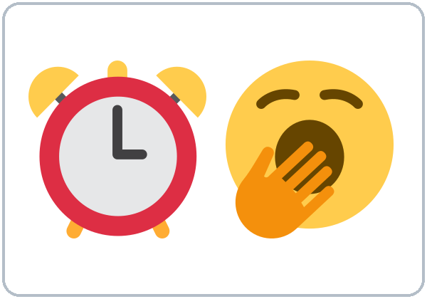
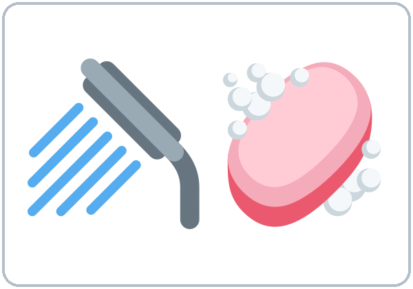
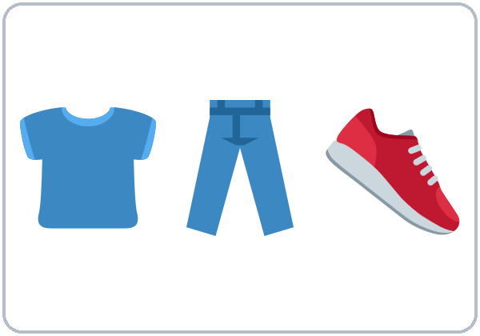
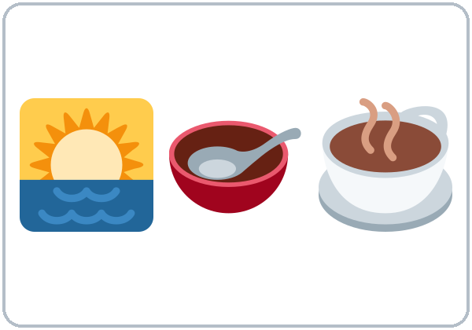
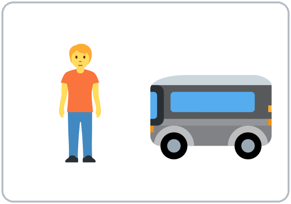
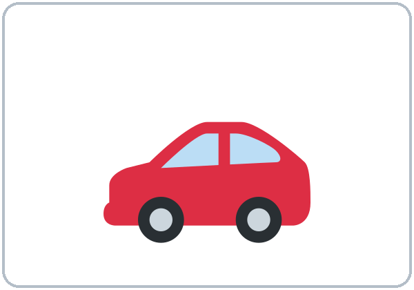
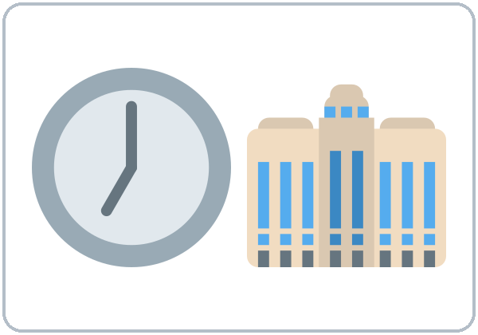
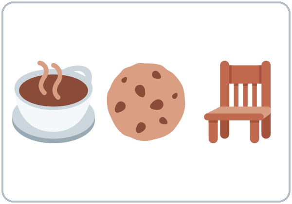
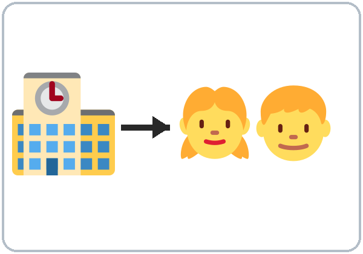
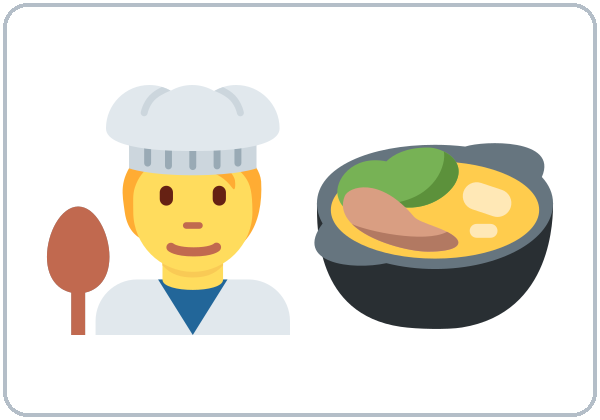
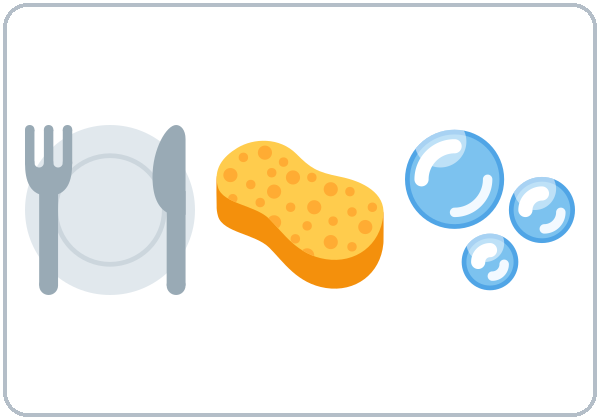
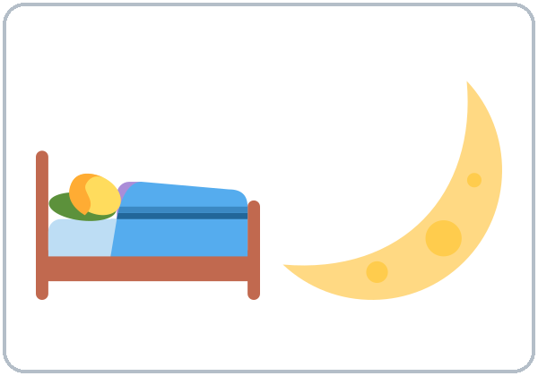
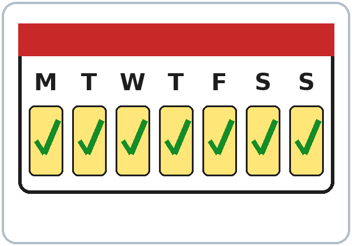
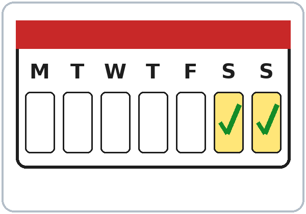
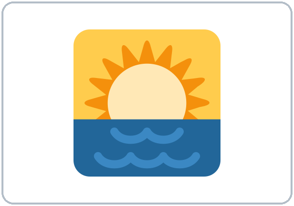
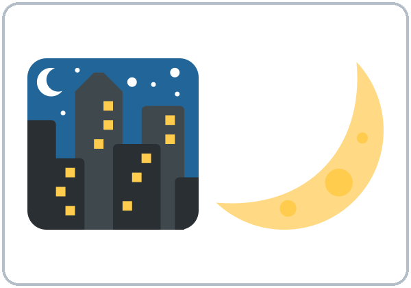
Listening
Listen: the conversation plays twice.
Listen to Ana and Marco.
A. Listen. Circle the time.
- Marco gets up at 5:30 / 6:30 / 7:00.
- He starts work at 6:00 / 7:00 / 8:00.
- He picks up the kids at 3:00 / 3:30 / 4:30.
- On Sundays he sleeps until 8:00 / 9:00 / 10:00.
B. Listen again. Who does it? Check ✓.
| Marco | His wife | |
|---|---|---|
| works at the hospital | ☐ | ☐ |
| drives | ☐ | ☐ |
| works at night | ☐ | ☐ |
| picks up the kids | ☐ | ☐ |
| cooks dinner | ☐ | ☐ |
C. Listen again. Write the missing word.
- My wife ________. She has the car.
- She ________ at a restaurant.
- I ________ pick them up at three thirty.
- On Sundays, I ________ get up early.
Grammar
Grammar Box 1: Yes/No questions
Choose one word from each column. Read across.
| Do | you / they | work? / drive? / cook? |
| Does | he / she / it | work? / drive? / cook? |
| Yes, | I / we / they | do. |
| No, | I / we / they | don't. |
| Yes, | he / she / it | does. |
| No, | he / she / it | doesn't. |
Answer about yourself: Do you work? → Yes, I do.
Grammar Box 2: What time…? and How often…?
| What time | do | you | get up? / start work? |
| What time | does | he / she | get up? / start work? |
| How often | do | you | cook? / drive? |
| How often | does | he / she | cook? / drive? |
| I | get up / start work | at 6:00. / at 7:30. |
| He / She | gets up / starts work | at 6:00. / at 7:30. |
| I | always / sometimes / never | cook. / drive. |
| He / She | always / sometimes / never | cooks. / drives. |
Sentences: positive and negative
| Person | ✔ Positive | ✘ Negative |
|---|---|---|
| I / You / We / They | I work. | I don't work. |
| He / She / It | She works. | She doesn't work. |
Questions and answers
Q: When do I use the simple present?
A: For routines and facts: things that happen again and again. I work at a hospital. I get up at 6.
Q: When do I add -s to the verb?
A: Only with he, she, it (one other person or thing). She works. Marco takes the bus.
Q: How do I spell the -s?
| Rule | Examples |
|---|---|
| Most verbs: +s | work → works, play → plays |
| -sh, -ch, -s, -x, -o: +es | watch → watches, go → goes, do → does |
| consonant + y: -ies | study → studies |
| Special | have → has |
Q: After doesn't or does, does the verb keep the -s?
A: No. The "one -s" rule: the -s moves to does. She works. → She doesn't work. → Does she work?
Q: How do I say how often?
| always 100% | usually | often | sometimes | rarely | never 0% |
|---|---|---|---|---|---|
| I always take the bus. | She sometimes cooks. | He never drives. |
Q: Where do always, usually, never… go?
A: Before the main verb: I usually take the bus. But after be: He is always late. Longer phrases go at the end: I cook every day.
Common mistakes
| ✗ Don't say | ✓ Say |
|---|---|
| She work at a store. | She works at a store. |
| He doesn't works. | He doesn't work. |
| Does she works? | Does she work? |
| I go always to the park. | I always go to the park. |
| I am work at a restaurant. | I work at a restaurant. |
| He have two kids. | He has two kids. |
Homework
Homework (10 minutes)
- Write 6 sentences about the routine of someone you know (My sister gets up at 6. She always takes the bus…). Use at least 3 frequency words.
- Listen to the audio again at home (scan the QR code or use the link) and repeat Marco's lines.
My homework
Teacher
At a glance
Objectives: learners can…
- describe a daily routine with 10 or more routine verbs
- use he/she + -s, doesn't, Does…?
- use always … never in the correct position
Materials
- Student Page 2
- routine picture cards (1 set per group)
- info-gap sheets A/B
- frequency signs (ALWAYS … NEVER)
- slips of paper
L2_listening.mp3- Prep time: 25 min.
Key vocabulary (with pictures in the Student Workbook)
get up, take a shower, get dressed, have breakfast, take the bus, drive, start work, take a break, pick up the kids, cook dinner, do the dishes, go to bed; every day, on weekends, in the morning, at night.
Clock-time plan
Core = 6:00–6:45 and 7:00–7:15. Everything after 7:15 is optional ("If time").
| Time | Step | Min | Grouping (15 / 7–8) | If running behind |
|---|---|---|---|---|
| 6:00–6:10 | Opening Talk + Homework Check (same partner): ask 3 questions (Where do you live? Do you work? Are you from a big city?), then ask each other your 5 homework questions | 10 | Pairs | Teacher collects the homework instead of reviewing it on the board |
| 6:10–6:18 | New Words: picture page + Picture Sequence | 8 | Groups of 4–5 / 2 groups | Teach the ★ words; skip mime-and-guess |
| 6:18–6:30 | Listening + "Say it" | 12 | Individuals → pairs | Skip the third play; do Task C together |
| 6:30–6:45 | Grammar Q&A: simple present + frequency, then a short Information Gap | 15 | Whole class, then pairs | Do the Q&A + mistakes table only; the Information Gap moves to "If time" |
| 6:45–7:00 | BREAK | 15 | ||
| 7:00–7:10 | Talk Time: Frequency Line → "Our Week" | 10 | Line, then pairs | Do "Our Week" only |
| 7:10–7:15 | Exit Ticket + Homework | 5 | Never skip | |
| 7:15–7:30 | If time (in this order): ① Pronunciation: 3 sounds of -s (5) ② Information Gap, full version (5) ③ "Guess Who?" (10) | 0–15 | Optional |
Step by step
Step 1 · 6:00–6:10 · Opening Talk + Homework Check · 10 min
- Grouping: pairs (same partner for both parts).
- Minutes 0–5: ask 3 questions: Where do you live? Do you work? Are you from a big city? Late arrivals join a pair.
- Minutes 5–10: partners ask each other their 5 homework questions.
- Teacher: walk around; write only 2 corrected questions on the board.
- If behind: collect the homework; return it next week with one correction each.
Step 2 · 6:10–6:18 · New Words · 8 min
- Grouping: groups of 4–5 (15) / 2 groups (7–8).
- Do: New Words page: point, say, repeat twice.
- Picture Sequence: groups put 12 routine cards in order for a typical day and say each one aloud.
- If time: pairs play mime-and-guess.
- If behind: teach the ★ words only.
Step 3 · 6:18–6:30 · Listening + "Say it" · 12 min
- Grouping: individuals → pairs.
- Before you listen: "Marco looks tired. Why?"
- Listen 1 → Task A (circle the times). Listen 2 → Task B (Marco or his wife?). Listen 3 → Task C (fill in).
- Ask: "Why drives with an -s?" (his wife = she)
- "Say it" (1–2 min): the class repeats "My wife drives. She works at a restaurant." Make the -s loud.
- If behind: skip the third play.
Step 4 · 6:30–6:45 · Grammar: simple present + frequency · 15 min
- Grouping: whole class, then pairs.
- Say: "We use the simple present for routines and facts. With he, she, it, the verb gets an -s. With does / doesn't, the -s moves to does, so the main verb has no -s."
- Grammar Box: read across one row of the question side, then the answer side. Learners choose a word from each column.
- Q&A: learner reads Q → class guesses → read A → board example.
- Check questions: "Marco takes the bus. One day or every day?" • "She ___ (not drive)." • "I take usually or I usually take?"
- Short Information Gap (last 5 min): A has Rosa's week, B has Ali's. Ask 3 questions each (What time does Rosa start work?). Don't show papers.
- If behind: skip the Information Gap.
Break · 6:45–7:00 · 15 min
- Put the ALWAYS … NEVER signs on the wall during the break.
Step 5 · 7:00–7:10 · Talk Time: Frequency Line → Our Week · 10 min
- Frequency Line (4 min): signs from ALWAYS to NEVER along a wall. Call "How often do you cook?" Learners stand at a sign and tell a neighbor.
- Our Week (6 min): pairs find 2 things in common and 2 differences, then report: "We both take the bus. Maria usually cooks, but I never cook!"
- If behind: do "Our Week" only.
Step 6 · 7:10–7:15 · Exit Ticket + Homework · 5 min · NEVER SKIP
- Exit ticket: one sentence about a family member with -s.
- Homework: explain it and do item 1 together.
If time · 7:15–7:30 · pick in this order
- ① Pronunciation (5 min): /s/ works, takes; /z/ plays, drives; /ɪz/ watches, fixes. Hold up 1, 2, or 3 fingers. Most important: say the -s at all.
- ② Information Gap, full version (5 min): finish all the blank cells.
- ③ Guess Who? (10 min): each learner writes 3 routine sentences anonymously. Groups read a slip aloud as he/she ("This person always gets up at 4…") and guess who wrote it.
Listening script: L2_listening.mp3 (about 1:25, plays twice)
Audio: play from a phone + small speaker. No speaker? Read the script with a volunteer learner.
Narrator: Lesson two. Listening. Ana and Marco talk at work. Listen.
Ana: Marco, you look tired!
Marco: I am! I get up at five thirty every day.
Ana: Five thirty? Why?
Marco: I work at the hospital. I start work at seven. I usually take the bus.
Ana: Do you drive?
Marco: No, I don't. My wife drives. She has the car.
Ana: Does she work at the hospital too?
Marco: No, she doesn't. She works at a restaurant. She works at night.
Ana: So who picks up the kids?
Marco: I do. I always pick them up at three thirty. Then I cook dinner.
Ana: Do you ever rest?
Marco: Sometimes! On Sundays, I never get up early. I sleep until nine!
Answer key
- Task A: 5:30; 7:00; 3:30; 9:00.
- Task B: works at the hospital = Marco; drives = wife; works at night = wife; picks up the kids = Marco; cooks dinner = Marco.
- Task C: drives; works; always; never.
Teacher notes
- Some learners work night shifts. Accept any routine: "morning" means whenever they wake up.
- Repeat the "one -s rule" every time the error appears this week.
- Info-gap sheets: make two copies of a weekly table and blank out 6 different cells on each.